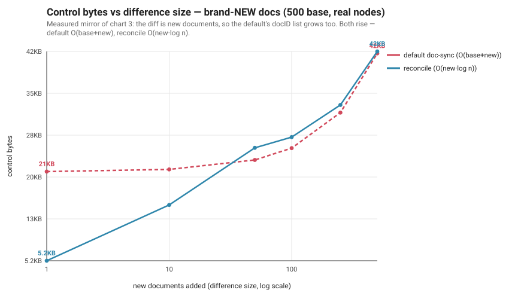

The claim: to find a small difference inside a large shared set,
default sync must communicate the whole set (O(n)), while reconciliation
narrows in on just the difference (O(diff·log n)). It wins in
that regime, costs more outside it, and is default-off.
How to read every chart. (1) The y-axis is control /
coordination bytes — the cost of discovering what differs, not the
data transferred (payload is identical either way). (2) Group A is modelled
(a directional sweep); Groups B–F are measured on real nodes. Where a model
and a measurement disagree, the measurement wins.
A · Modelled asymptotic sweep
Synthetic sweep of the real Phase-2 negentropy engine against an idealized full-identifier baseline — the asymptotic shape at sizes too large to run end-to-end. Directional, not wall-clock; the baseline is deliberately generous, so these understate the real win.
x = set size n (diff fixed at 2); y = control bytes, log-log. Default climbs with the set, negentropy with its logarithm — 188× fewer at n=100k.x = set size n; y = default ÷ negentropy. Chart 1 as a ratio: the saving compounds with set size — the larger the shared set, the bigger the win.x = difference size d = added items (base ~10k); y = control bytes, log-log. Default is ~flat until d nears n then rises (added items enlarge the set); negentropy rises throughout, crossing ~10%. Validated by the measured chart 15 (same added-items setup).x = set size n; y = round-trips. Negentropy spends 2–4 logarithmic rounds where default takes 1 — the latency price paid for the byte savings.
B · Collection convergence at broadcast cost (real nodes)
Reconciliation converges a whole small collection in one session, at round-trips and control bytes comparable to a single default broadcast — same payload.
Bars = round-trips to converge 10 docs. One collection session (4) collapses M1's 42 back toward default's 3.Bars = control bytes, log-y. Collection-scope reconciliation (2.2KB) lands near broadcast (1.5KB), erasing M1's 44× penalty — same payload throughout.
C · The payoff — both axes of O(diff·log n) vs O(n) (real nodes)
The core value, measured, across both variables of the complexity: grow the collection (chart 9) or grow the difference (charts 15 & 12). Note what counts as a "difference": brand-new docs enlarge the docID set, so default grows too (chart 15, the measured mirror of chart 3); updates to existing docs keep it fixed, so default stays flat (chart 12). Y is coordination cost; payload is identical either way.
x = collection size 50→1000 (one doc changed); y = control bytes. Default is O(n) (2.1→42KB); reconciliation ~logarithmic (2.7→6.4KB) — 6.5× fewer at 1000 docs.

x = brand-new docs added 1→500 (500 base); y = control bytes. Difference = new docIDs, so BOTH grow — default O(base+new), reconcile O(new·log n). The measured analogue of the modelled chart 3.x = updated docs 1→500 (collection fixed at 500); y = control bytes. Difference = new versions of existing docs, so the docID set stays 500 → default flat at 21KB; reconciliation linear (5.3→23.2KB), crossing only at ~79% changed.
D · Maintenance cost (real node)
What it costs when the flag is on: a small, always-on bookkeeping write on every local commit. Paid whether or not you ever reconcile.
Bars = local write latency, flag off vs on. The ordered-index write adds ~4.6% (76.4→80.0ms) — bounded, and only when enabled.
E · Cross-container network (real Docker containers)
Off the single-process bench and onto real Docker containers on one host bridge, scaling the network 2→10 nodes (star topology, one diverged doc in a 50-doc collection).
x = node count 2→10; y = total network control bytes, log-y. Default is super-linear (18KB→1.28MB); reconciliation linear (10→90KB) — the reduction compounds 1.8×→14×. Every run converged with identical document state.
F · Long-branch depth-invariance (real nodes)
The long-differing-branch case — does a deep divergence cost more to discover? A two-sided fork with branches 3 vs 50 commits deep.
x = branch depth (3 vs 50); y = control bytes, log-y. Flat across a 16× depth increase for both — a deep branch is still one differing head.x = branch depth; y = blocks fetched. Payload scales with depth (60→1000) — depth is a transfer/merge cost, not a discovery cost.